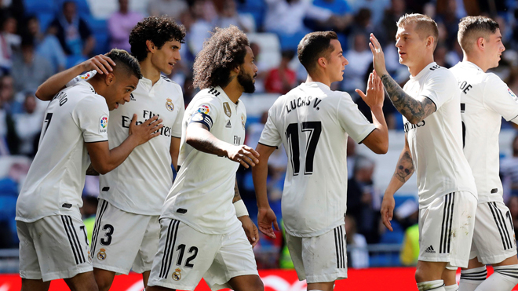

Mundo Futbol
Real Madrid
El Real Madrid Club de Fútbol, más conocido simplemente como Real Madrid, es una entidad polideportiva con sede en Madrid, España. Fue declarada oficialmente registrada como club de fútbol por sus socios el 6 de marzo de 1902 con el objeto de la práctica y desarrollo de este deporte —si bien sus orígenes datan al año 1900,7 y su denominación de (Sociedad) Madrid Foot-ball Club a noviembre de 1901—. Tuvo a Julián Palacios y los hermanos Juan Padrós y Carlos Padrós como principales valedores de su creación
Durante los más de ciento quince años de la entidad han vestido la camiseta del club más de mil doscientos futbolistas.367 Entre ellos han jugado algunos de los considerados como los mejores jugadores de su época y de la historia del fútbol. Reconocidos por su amplio palmarés tanto a nivel de club como a nivel internacional de selecciones, los jugadores de nacionalidad argentina son los más representados —a excepción de los españoles— con un total de veintinueve futbolistas. En total, más de ciento setenta jugadores extranjeros han defendido la camiseta blanca desde que Arthur Johnson lo hiciera en el primer partido oficial del club contra otra sociedad.
Tras la remodelación en el organigrama deportivo del club llevada a cabo en el año 2012 se vio afectada la parcela del «staff» técnico de la primera plantilla. En ella la figura de entrenador pasó a ser denominada como mánager deportivo, variando sus funciones y encargándose de toda la sección deportiva de la sección futbolística, desde la planificación y desarrollo de los futbolistas hasta el trabajo de campo, conocido como entrenador o preparador
